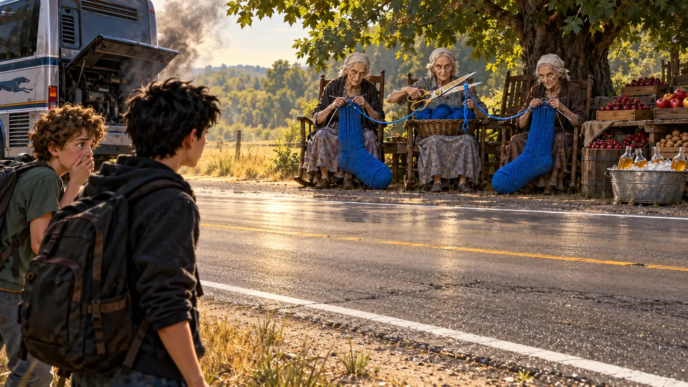
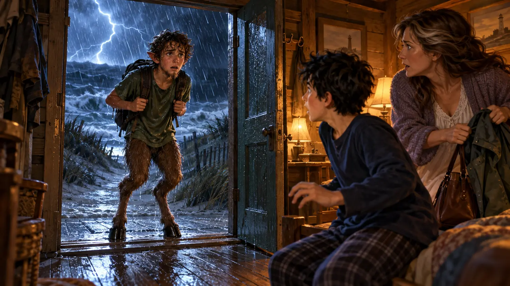

English reading quest · Chapters 1–4
Escape to Half-Blood Hill
Reality has begun to crack. A teacher vanished. Three women cut a thread. Grover has hooves. Now something with horns is following you through the storm.
Mission: reach the farmhouse alive

Mission 1 · Restore the case file
What happened first?
Click the four events in chronological order. A wrong choice does not end the mission—try again.
The file is scrambled.

Mission 2 · Mythology detector
Ordinary… or mythological?
Decide what each clue really means in Percy’s world.

Mission 3 · Language under pressure
Choose the exact expression
Use the chapter vocabulary. You need six correct answers to unlock the hill.
0 of 6 correct

Final mission · Bullfighting
Survive the charge
Choose one action at each moment. Think like Percy: the Minotaur is powerful, fast, and bad at changing direction.
The Minotaur is on your trail.
Final report
You crossed the property line
Write 3–5 sentences. Use at least two expressions from the quest:
keep tabs onon someone’s trailhold your groundwith all your mighthaul someone up
Was Percy brave, reckless, or both? Explain his most important decision.
Your teacher can read the report before you finish.
Quest complete
20 / 20
Mythology Detective
You followed the clues, understood the language and survived the Minotaur.